Keepy の紹介に必要な素材と情報をまとめています。ご自由にお使いください。
1 点ずつ必要な場合は、下のスクリーンショットの「原寸を開く」からどうぞ。
Keepy（キーピー）は、契約中のサブスクリプションや分割払い、カード・口座・保険などの情報を一冊にまとめる iPhone・iPad アプリです。家族用のパスコードを渡すと、見るだけの画面で中を確認してもらえます（サブスクと資産は家族ごとに見せる・見せないを選べます）。もしものときに「何をどこで契約していたか」が家族に分かる状態にしておく、というのが軸です。
記録は利用者の端末の中に暗号化して保存します。開発者のサーバーはなく、登録した中身（金額・契約日・メモ・氏名・家族の連絡先）を開発者へ送信することはありません。通信が起きるのは、サービスのロゴの取得、App Store での購入の確認、暗号化したバックアップの iCloud Drive への保存（復活カギの発行後は自動）、共有フォルダへの書き出し、共有シートやお問い合わせのメールで利用者が送るとき、利用者が押したリンクを開くときです（内訳は安全のしくみ）。
| 名称 | Keepy（キーピー） |
|---|---|
| 公開日 | 2026年8月23日 |
| iPad 対応 | 2026年9月23日（バージョン 2.0） |
| 対応 | iPhone / iOS 17.0 以上・iPad / iPadOS 17.0 以上（日本の App Store） |
| 価格 | 無料（プレミアム機能はアプリ内課金で買い切り 3,480 円・税込） 先着100名の早期割引（2,480 円）は2026年9月11日に終了しました。 |
| App Store | https://apps.apple.com/jp/app/id6786194974 |
| 公式サイト | https://keepy.jp |
すべて 1320 × 2868 ピクセル（PNG）。App Store 掲載中のものと同じ素材です。
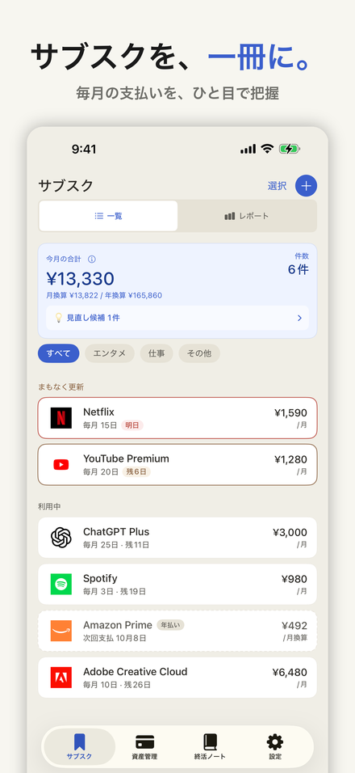
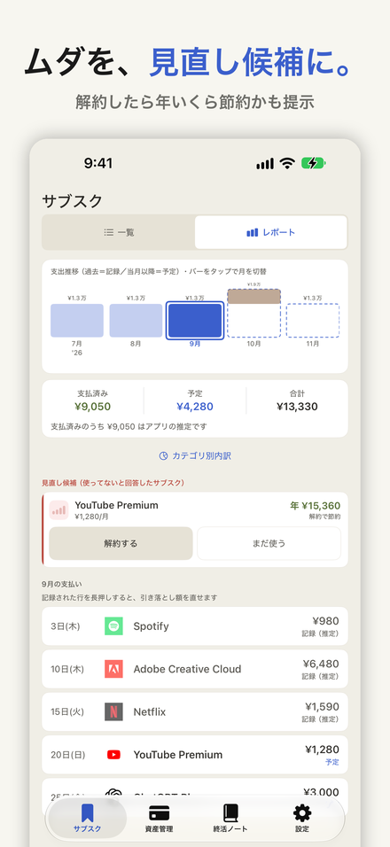
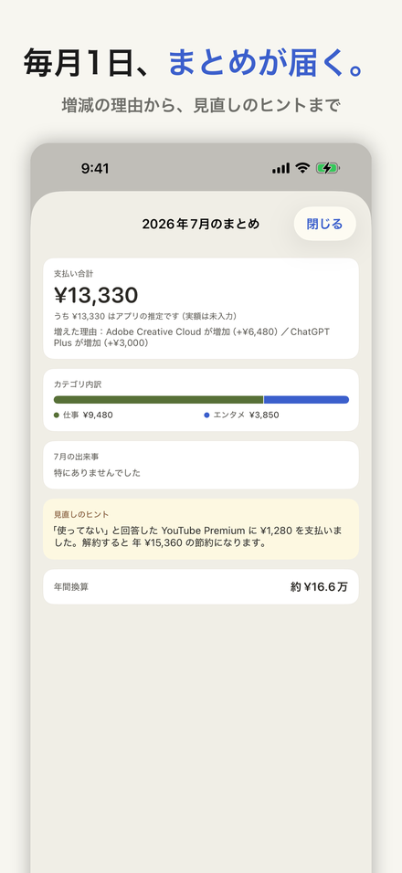
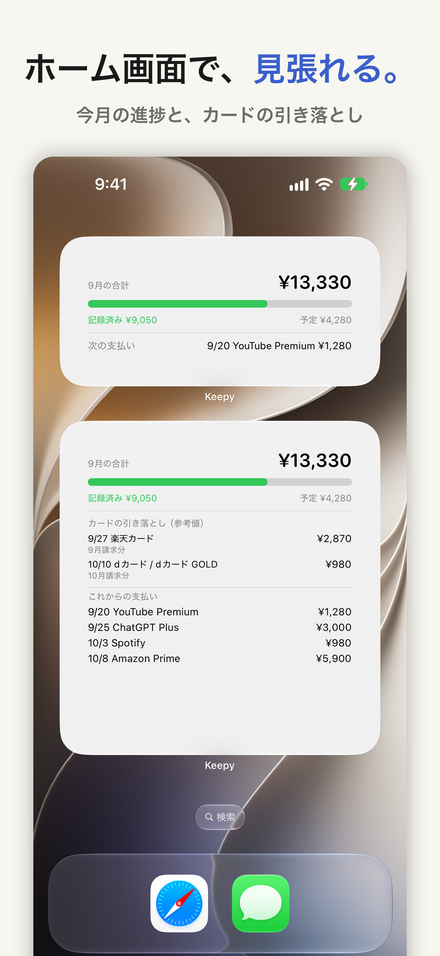
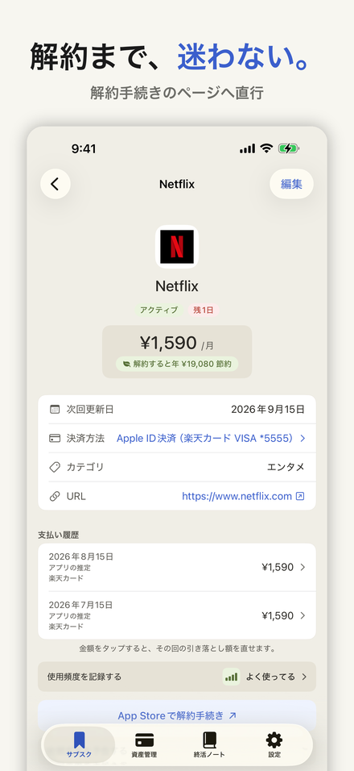
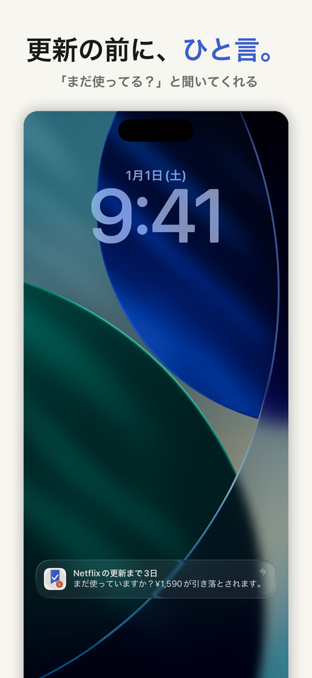
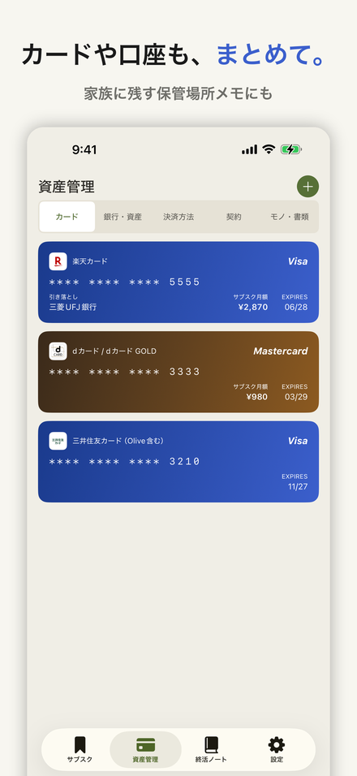
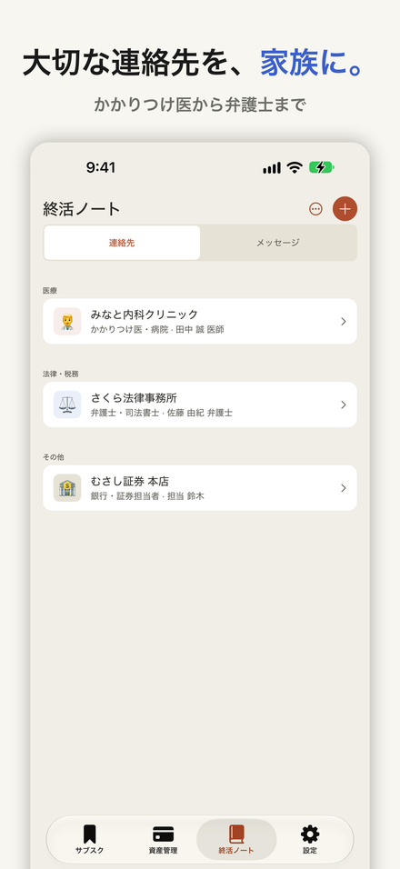
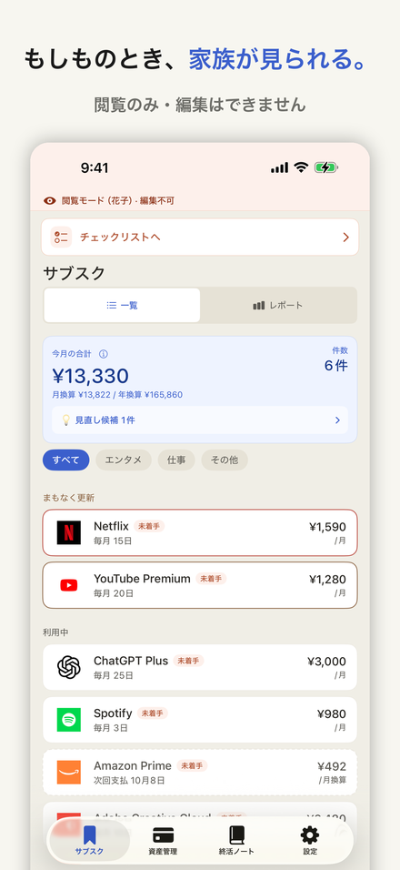
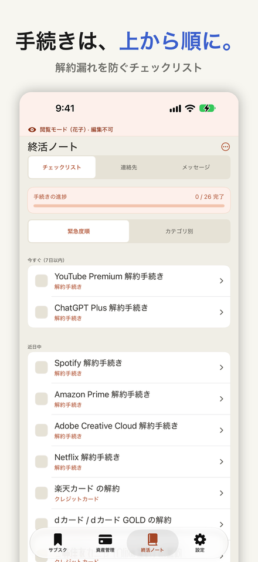
2752 × 2064 ピクセル（PNG）。横向きで、左のサイドバーと、一覧・詳細を左右に並べた状態です。
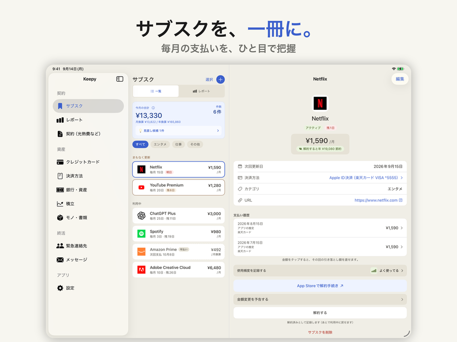
1024 × 1024 ピクセル（PNG）。原寸を開く
2026年9月24日
個人で開発しているアプリ「Keepy（キーピー）」が、2026年9月23日に iPad に対応しました。Keepy は、毎月引き落とされているサブスクや分割払い、カードや口座の記録を一冊にまとめ、もしものときに家族に見てもらえるようにしておくアプリです。無料で始められ、プレミアム機能は3,480円（税込）の買い切りです。
サブスクや分割払いは、何もしなくても支払いが続きます。止めるには、どのサービスと契約しているのかを知っていなければなりません。
もし本人が説明できなくなったら、家族の手がかりは明細に並ぶ引き落としの名前だけです。明細の名前から契約先を一つずつ調べることになり、どこまで探せば終わるのかも分かりません。本人が Keepy に記録しておいた契約は、家族が Keepy を開けば分かります。
家族用のパスコードで開くと、見るだけの画面になり、追加・書き換え・削除はできません。手続きが済んだ印は付けられます。
サブスクと、カード・口座・契約・モノや書類などの記録は、それぞれ家族ごとに見せる・見せないを選べます（見せない記録も、チェックリストには件数だけ表示されます）。メッセージ、連絡先、チェックリストは、この設定に関係なく見られます。ほかの家族に宛てたメッセージは、タイトルと「このメッセージは○○さん宛てです」が表示され、本文は開けません。
縦向きでも横向きでも使えます。横向きなど画面の幅に余裕があるときは、左にサイドバーが並び、一覧と詳細を左右に並べたまま見られます。幅が足りないときは、サイドバーを必要なときに呼び出せます。画面を左右に分けて二つのアプリを並べる Split View にも対応しており、幅がさらに狭くなると iPhone と同じ画面になります。
契約の引き継ぎの話は、家族で並んで座ってすることもあります。iPhone を回して見せ合うより、大きな画面を一緒にのぞき込むほうが向いている場面がある、と考えました。
記録した内容は、端末の中で暗号化して保存します（AES-256）。アカウント登録はなく、利用状況の解析や広告の仕組みも入れていません。アプリが記録した内容を独自のサーバーへ送ることはありません。サービスのロゴを表示するときは、そのサービスのドメイン名（例：netflix.com）で、外部のロゴ配信サービスなどに画像を問い合わせます。通信が起きる場面は安全のしくみに全部書いています。
バックアップは、暗号化したファイルとして作ります。最初に一度バックアップを作ると、その後は記録を変えたあと、ホーム画面に戻るなどしてアプリを離れたときに、iCloud Drive へ自動で保存します（iCloud Drive が使えるとき。設定で止めることもできます）。好きな場所へ手動で書き出すこともできます。
2026年8月23日
Keepy（運営責任者：森田健太朗）は、契約中のサブスクリプションや分割払い、カード・口座・保険などの情報を一冊にまとめ、もしものときに家族が引き継げる iPhone アプリ「Keepy（キーピー）」を、2026年8月23日に App Store で公開しました。
家計診断・相談サービス「オカネコ」の調査では、契約中のサブスクリプションに「ほとんど使っていないのに解約し忘れているものがある」と答えた人が 19.1% にのぼりました（株式会社400F・2025年12月・330人）。
支払いは自動で続く一方、どのサービスをいつ契約し、どのカードから引き落とされているかを把握しているのは本人だけ、という家庭は少なくありません。本人が説明できない状態のまま何かが起きると、残された家族は契約の全体像が分からず、解約も名義変更も手をつけられません。Keepy は「支払いの管理」と「家族への引き継ぎ」を同じ一冊で扱います。
記録は利用者の端末の中に暗号化して保存します。開発者のサーバーはなく、登録した中身を開発者へ送信することはありません。通信が起きる場面（ロゴの取得・購入の確認・iCloud Drive へのバックアップなど）は安全のしくみに全部書いています。
上記および当サイトで引用している調査は次のとおりです。
| 19.1% | 使っていないのに解約し忘れているものがある オカネコ（株式会社400F）／2025年12月6〜7日／330人 |
|---|---|
| 69.4% | サブスクの解約を検討した経験がある Appliv（ナイル株式会社）／2024年2月2〜7日／605人（調査実施＝ジャストシステム） |
| 58.5% | 解約により年1万円ほど節約できた Appliv（ナイル株式会社）／2024年2月2〜7日／605人（調査実施＝ジャストシステム） |
| 提供元 | Keepy（個人事業主） |
|---|---|
| 運営責任者 | 森田 健太朗（Kentaro Morita） |
| 連絡先 | info@keepy.jp |
| 所在地 | ご請求があれば遅滞なく開示いたします |
編集部でお試しいただける場合は、プレミアム機能を無料でご利用いただける引き換えコードをお渡しできます。上記メールアドレスまでお気軽にお申しつけください。
このページの画像は、Keepy を紹介する記事での使用に限り、ご自由にお使いいただけます。サイズの調整やトリミングは差し支えありません。画面の文言や数値を書き換えるなど、実際のアプリと異なる印象になる加工はご遠慮ください。ご不明な点は info@keepy.jp までお問い合わせください。
{kind=link}
{kind=link}
{kind=link}
{kind=link}
{kind=link}
{kind=link}
{kind=link}
{kind=link}
{kind=link}
{kind=link}
{kind=link}
{kind=link}